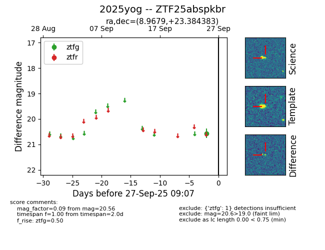

FINK: ZTF25abspkbr
Lasair: ZTF25abspkbr
ALeRCE: ZTF25abspkbr
TNS: 2025yog
YSE: 2025yog
ZTF25abspkbr (ztf,fink)
2025yog (tns,yse)
equatorial (ra, dec) = (8.9679,+23.38438)
galactic (l, b) = (118.3115,-39.34767)

last ztfg=20.56
1 ztfg detections